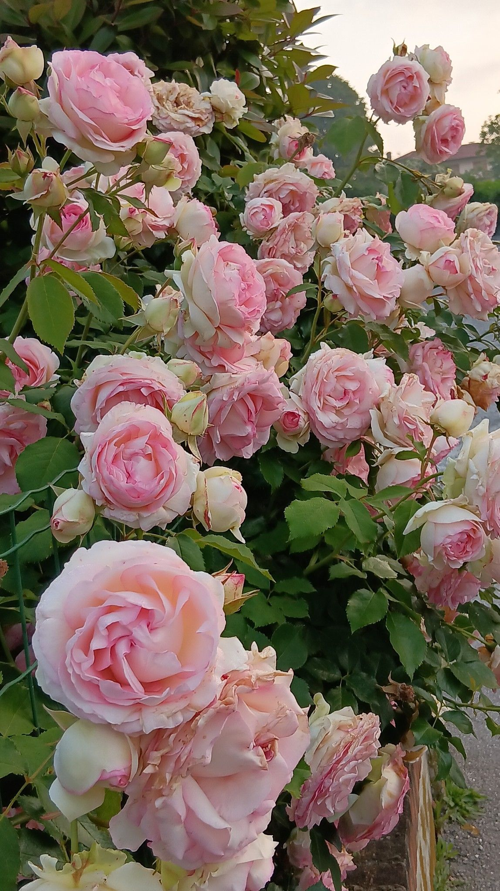

ດອກກຸຫຼາບຄືລາຊິນີແຫ່ງດອກໄມ້ ທີ່ເປັນຕົວແທນຂອງຄວາມຮັກ ແລະ ຄວາມໂຣແມນຕິກມາທຸກຍຸກທຸກສະໄໝ. ຄວາມໝາຍຂອງມັນເລິກເຊິ່ງກວ່າການບອກຮັກທົ່ວໄປ ເພາະມັນສື່ເຖິງຄວາມປາຖະໜາຢ່າງແຮງກ້າ, ຄວາມຜູກພັນທີ່ໝັ້ນຄົງ ແລະ ການໃຫ້ກຳລັງໃຈ. ນອກຈາກນີ້, ຄວາມໝາຍຍັງປ່ຽນໄປຕາມສີສັນ ເຊັ່ນ: ສີແດງຄືຄວາມຮັກທີ່ຮ້ອນແຮງ, ສີຂາວຄືຄວາມບໍລິສຸດໃຈ ແລະ ສີຊົມພູຄືຄວາມອ່ອນໂຍນ ທີ່ພ້ອມຈະຢູ່ຄຽງຂ້າງກັນສະເໝີ ບໍ່ວ່າໃນຍາມສຸກ ຫຼື ຍາມທຸກ.
